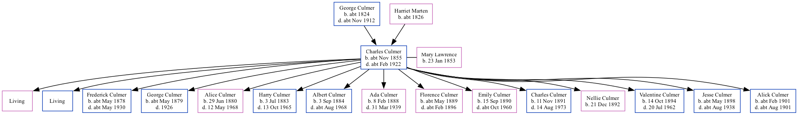

Charles Culmer cNov 1855 - c1922 [ Home ] | [ Calendar ] | [ Surnames Index ] | [ Family History ]A coal dealer and the child of George Culmer (an agricultural labourer) and Harriet Marten Charles Culmer , the first cousin three-times-removed on the mother's side of Nigel Horne , was born in Canterbury, Kent, England c. Nov 18551 and married Mary Lawrence (with whom he had 15 children: Frances Lilian , William Charles , Frederick Percy , George James , Alice Harriet , Harry Robert , Albert Thomas , Ada Elsie , Florence Emma , Emily Rose , Charles Ernest , Nellie Louisa , Valentine Frank , Jesse Arthur and Alick Lawrence , along with 2 surviving children) on St Mary Of Charity's Church, Church Road, Faversham, Kent, England on 22 Aug 18753 .
Charles spent all of his life in Kent in England. Throughout his life, he lived in several places around the county: at St Thomas Hill in Canterbury on 7 Apr 18614 ; at 56 Tanners Street in Faversham on 3 Apr 18815 and on 5 Apr 18916 ; at 19 Cecil Avenue, Strood on 31 Mar 19017 ; and at 39 Cross Street, Strood on 2 Apr 19118 .
He died c. Feb 1922 in Strood, Kent, England2 .
Parents George was born c. 1824Harriet was born c. 1826Children Frederick Percy was born c. May 1878George James was born c. May 1879Alice Harriet was born on 29 Jun 1880Harry Robert was born on 3 Jul 1883Albert Thomas was born on 3 Sept 1884Ada Elsie was born on 8 Feb 1888Florence Emma was born c. May 1889Emily Rose was born on 15 Sept 1890Charles Ernest was born on 11 Nov 1891Nellie Louisa was born on 21 Dec 1892Valentine Frank was born on 14 Oct 1894Jesse Arthur was born c. May 1898Alick Lawrence was born c. Feb 1901Citations England & Wales births 1837-2006 - Findmypast England & Wales deaths 1837-2007 - Findmypast England Marriages 1538-1973 - Findmypast 1861 England, Wales & Scotland Census - Findmypast (was age 5 and the son of the head of the household) 1881 England, Wales & Scotland Census - Findmypast (was age 25 and the head of the household) 1891 England, Wales & Scotland Census - Findmypast (was age 37 and the head of the household) 1901 England, Wales & Scotland Census - Findmypast (was age 46 and the head of the household) 1911 Census for England & Wales - Findmypast (was age 55 and the head of the household) Media England & Wales deaths 1837-2007 - BMD/D/1922/1/AZ/000261/095 England Marriages 1538-1973 - R_848611009 Kent, Canterbury Archdeaconry marriages - GBPRS/CANT/M/97028327/1 England & Wales marriages 1837-2005 - BMD/M/1875/3/AZ/000064/110 England & Wales births 1837-2006 - BMD/B/1855/4/CJ/000172/036 England Marriages 1538-1973 - R_854023309 1881 England, Wales & Scotland Census - GBC/1881/0004770483 1891 England, Wales & Scotland Census - GBC/1891/0005793974 1901 England, Wales & Scotland Census - GBC/1901/0003111592 1911 Census for England & Wales - GBC/1911/RG14/03869/0717/1 Family Tree Map
Generated by ged2site . Last updated on Feb 19, 2025